<!DOCTYPE html>
<html lang="sv">

<head>
    <meta charset="UTF-8">
    <meta name="viewport" content="width=device-width, initial-scale=1.0">
    <link rel="stylesheet" href="style.css">
    <link rel="stylesheet" href="https://unpkg.com/leaflet@1.9.4/dist/leaflet.css" integrity="sha256-p4NxAoJBhIIN+hmNHrzRCf9tD/miZyoHS5obTRR9BMY=" crossorigin="" />
    <script src="https://unpkg.com/leaflet@1.9.4/dist/leaflet.js" integrity="sha256-20nQCchB9co0qIjJZRGuk2/Z9VM+kNiyxNV1lvTlZBo=" crossorigin=""></script>
    <link rel="preconnect" href="https://fonts.googleapis.com">
    <link rel="preconnect" href="https://fonts.gstatic.com" crossorigin>
    <link href="https://fonts.googleapis.com/css2?family=Crimson+Text:ital,wght@0,400;0,600;0,700;1,400;1,600;1,700&display=swap" rel="stylesheet">
    <script type="module" src="js/main.js" defer></script>
    <title>Gröna Kartan</title>
</head>

<body>
    <aside>
        <!-- En liten flik på sidan -->
        <div id="start-div">
            <div id="search-flex">
                <input type="text" id="search-act" placeholder="Sök här"> <button id="search-btn">Sök</button>
            </div>
            <!-- Ska man lägga in språk här? -->
            <hr>
            <!-- Filtersektion -->
            <div id="symbol-filters">
                <div class="filter-group fil-places">
                    <p>Platser:</p>
                    <div class="group-symbols">
                        
                        
                        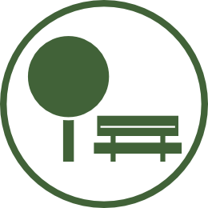
                        
                        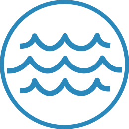
                    </div>
                </div>
                <div class="filter-group fil-activity">
                    <p>Aktiviteter:</p>
                    <div class="group-symbols">
                        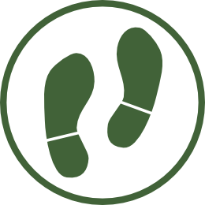
                        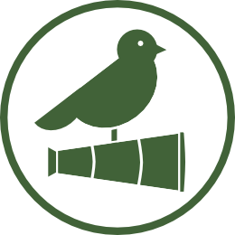
                        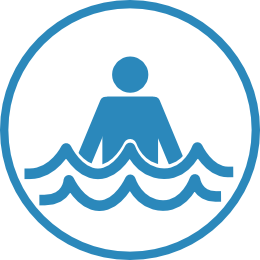
                        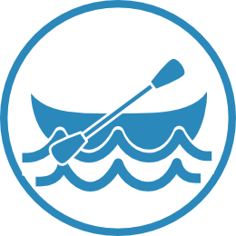
                        
                        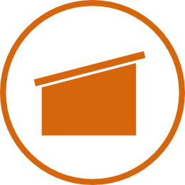
                        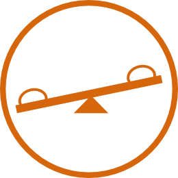
                        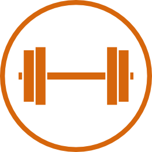
                        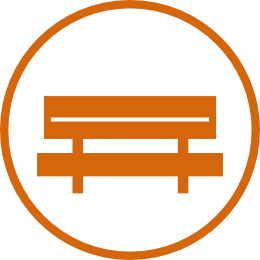
                        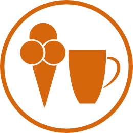
                    </div>
                </div>
                <div class="filter-group fil-access">
                    <p>Tillgänglighet:</p>
                    <div class="group-symbols">
                        
                        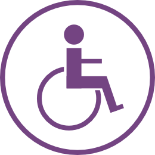
                        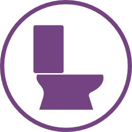
                        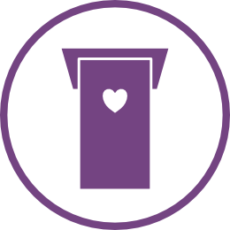
                        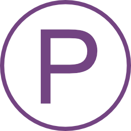
                        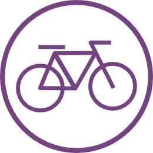
                        
                    </div>
                </div>

                <!-- Lägga till en papperskorg eller ngt, som rensar alla filter -->
            </div>
            <hr>
            <h1>Närmast dig</h1>
            <section class="cards-holder">
                <div class="place-card">
                    <div class="place-card-img"></div>
                    <div class="place-card-info">
                        <h2>Namn på plats</h2>
                        <p>Typ av plats</p>
                        <p>Distans från tavlan</p>
                        <div class="place-card-symbols"></div>
                    </div>
                </div>
            </section>
        </div>
        <div id="detail-div">
            <!-- Här hamnar detaljsidan när man klickar -->
        </div>
    </aside>
    <main>
        <!-- Kartan som underlag -->
        <div id="map"></div>
    </main>
</body>

</html>